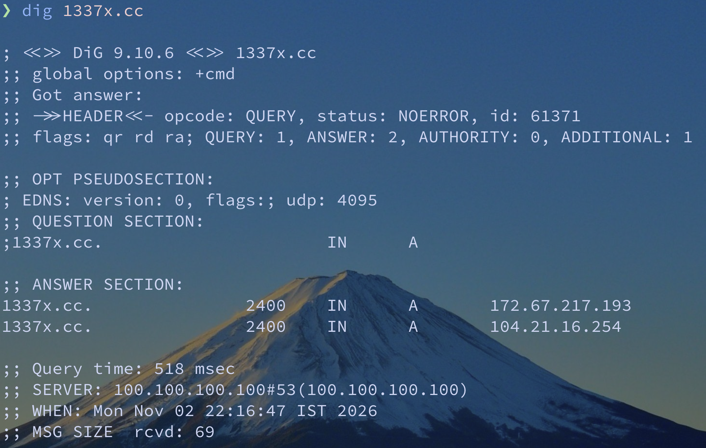
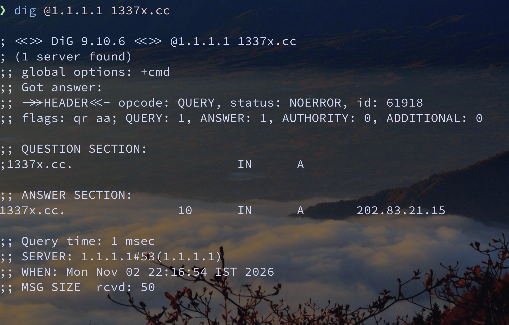
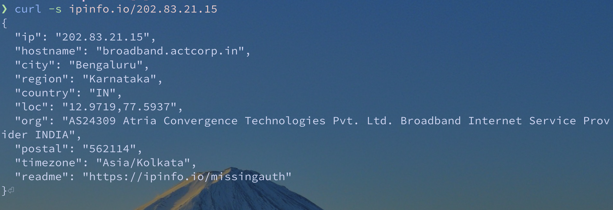

It was just a boring Saturday afternoon, and I thought I'd fix some of the problems with my homelab. One of those problems was that an external site my Podman container was trying to talk to just wasn't working.
I kept getting "Site cannot be reached" almost immediately. This made me suspect something was wrong with my DNS setup, so I started doing a dig on the domain. I tried different providers, Google DNS, Cloudflare, pretty much everyone. Almost all of them returned the same IP address. But as soon as I tried Cloudflare's DoH endpoint, I got a completely different IP address.
"Huh?" was my exact reaction.
I took the IP I got from the first DNS resolution and tried to look up who owned it. Lo and behold, it was my goddamn ISP. That's when I realised my ISP was hijacking my DNS queries and returning a tampered IP address.



Well, the obvious answer was DoT (DNS over TLS) or DoH (DNS over HTTPS). I made a tweet about this, and it somehow blew up.
But going through the replies, I noticed quite a few misconceptions and questions that I couldn't answer one by one.
So I figured I'd use this article to address some of those questions and clear up a few misconceptions along the way.
I self host Unbound I am safe
For those of you who don't know, Unbound is basically a DNS resolver, kind of like what Cloudflare runs at 1.1.1.1. The difference is, you can run it locally. It works by querying DNS servers to figure out the IP address for a domain, starting at the root nameservers and eventually making its way to the domain's authoritative nameserver.
Now here's the catch. DNS resolution doesn't happen over a single connection. Your resolver might have to talk to multiple nameservers to figure out an IP address, and these queries are traditionally sent over plaintext DNS, usually UDP. Which means, you guessed it, your ISP can snoop on or even tamper with your DNS traffic.
But you can also configure a forward-zone in Unbound. Instead of resolving DNS queries itself, Unbound can forward them to another DNS resolver. And if that resolver supports DoT, the connection to it is encrypted, which means your ISP can't casually snoop on or tamper with your DNS queries in transit.
Just use DNSSEC
It's understandable why someone would assume DNSSEC is what protects them here. I mean, it has DNS and Security right in the name. And in a way, it does, but it works through verification, not encryption.
You see, DNSSEC doesn't encrypt your DNS traffic before sending it to a resolver. It uses cryptographic signatures to verify that the DNS data is authentic and hasn't been tampered with. But the problem here remains the same: your DNS traffic is still unencrypted in transit. Which means, your ISP can still snoop on it or mess with the responses.
And for DNSSEC validation to work, the domain you're querying needs to have DNSSEC properly configured, with valid signatures and a chain of trust. And here's another problem: according to the October 2026 Defaults.Exposed census, only 7.03% of graded domains have a valid, fully validating DNSSEC chain.
If a tampered response fails DNSSEC validation, your resolver will return SERVFAIL instead of handing you that bogus IP address.
DoH and DoT are not Tamper free
And yes, this is true. DoT and DoH rely on you trusting the DNS resolver you're sending your queries to. They encrypt the connection, so your ISP can't casually snoop on or tamper with your DNS traffic in transit. But that doesn't mean the resolver itself can't mess with your responses. You're still putting your trust in whoever runs that DNS server.
Your ISP can snoop on the sites regardless
Indeed. But the problem here wasn't them snooping on me. It was them potentially censoring me and blocking access to something in bad faith.
Also, I tunnel my traffic through Mullvad anyway, so they probably can't snoop on my browsing activity anyway. But that's a story for another day.
So what does my setup look like?
I've been using Pi-hole/AdGuard for over 3 years now. That's actually what got me into self-hosting in the first place.
But there's another reason I don't route every single container through my local DNS server. When I'm updating containers, if something goes wrong and my DNS server goes down, I don't want that to take down DNS resolution for other containers that depend on it. So for some containers, I wanted an external DNS resolver as a fallback.
Right now, I use AdGuard for my DNS, with dnscrypt-proxy handling the upstream DNS queries over DNSCrypt, so my DNS traffic is encrypted in transit. For containers where I really can't afford DNS failures, I also have Cloudflare configured as a fallback. My local AdGuard is still the primary DNS for them, though.
I also run NixOS on my servers, and my dotfiles are open source if you're interested